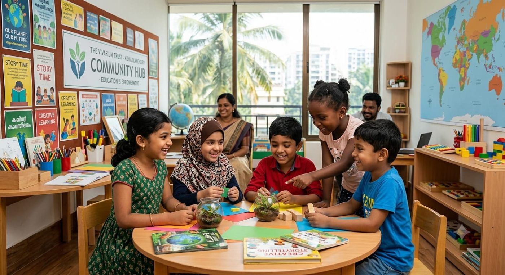
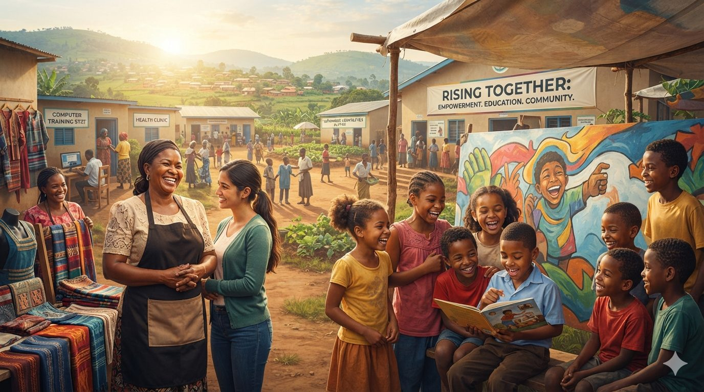
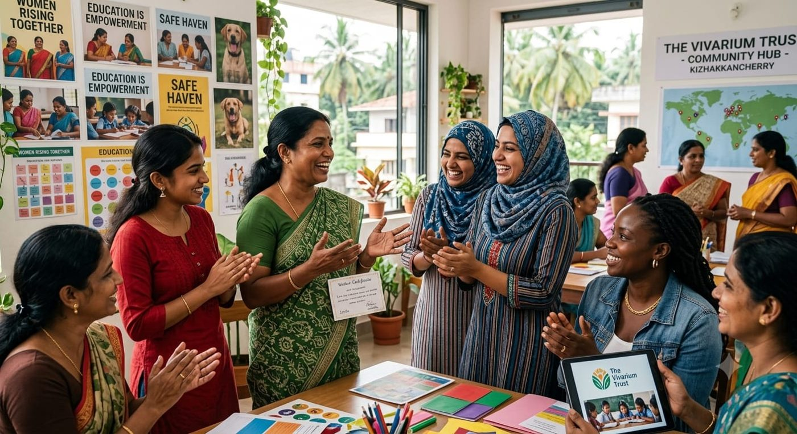
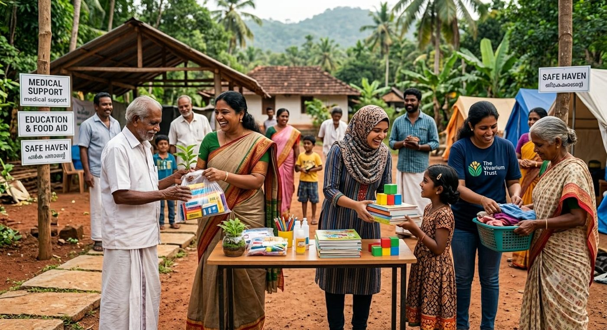
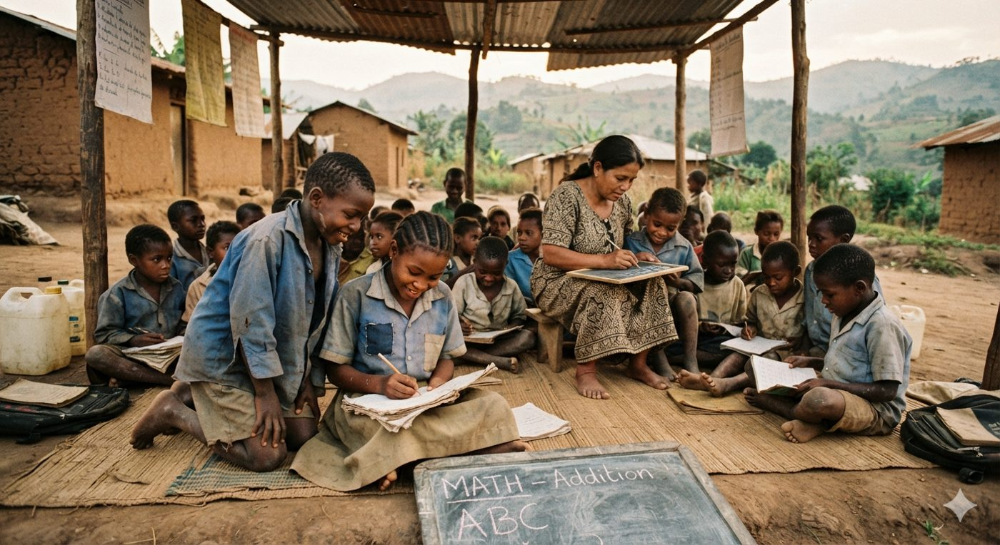

Education for Every Child
Safe, bright learning spaces where curiosity comes first and no child is left to learn alone.
Illustrative progress — replace with confirmed figures.
Together, we can create opportunities, strengthen communities, and build a future where every person has the chance to thrive.
Education for children, skills for women, and healthier communities — built with the people who live there.

01 — Give with confidence
Make giving simple and transparent by showing visitors how their contributions support the foundation’s work. Choose an amount, decide whether to give once or monthly, and see the purpose before you commit.
The foundation should publish verified fund allocation and impact reports here: [link to confirmed report].
02 — Campaigns that matter

Safe, bright learning spaces where curiosity comes first and no child is left to learn alone.
Illustrative progress — replace with confirmed figures.

Training, mentoring and networks that help women lead their own livelihoods.
Community days, health support and shared spaces that bring neighbours together.
Illustrative progress.

03 — Make impact visible
04 — Turn compassion into action
Give interested people a simple, accessible way to offer their time and skills. Mentoring, event support, outreach, teaching or fundraising — there is a role for every kind of help.
05 — Let community voices lead
“The classroom felt like it belonged to us. I came to learn, and I stayed to teach the younger ones.”

A short, consent-based story would sit here, told in the person’s own words and shared with their permission.
Fictional sample. Replace with real, consented stories.
Prototype state: a stories archive page would open here.
Documents visitors can check. Each link goes live once the foundation confirms the file.
Every meaningful change begins when someone chooses to take part.